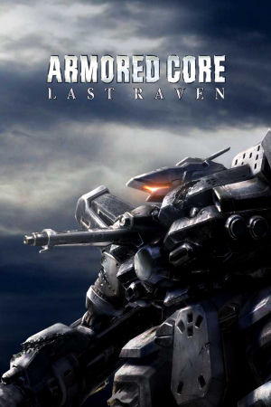

PlayStation 2, PlayStation Portable
Originally released in Japan on August 4th, 2005, and in North America on June 13th, 2006 for PlayStation 2, Armored Core: Last Raven is a mech action game developed by FromSoftware. It concludes the storyline that began with Armored Core 3 and continued through Silent Line and Nexus, depicting a world ravaged by the Navis Conflict — the failed attempt to control ancient weapons technology at the end of Nexus — where two rival factions, the corporate Alliance and the Raven-led rebel group Vertex, battle for dominance. Players take on missions as a Raven, a mercenary AC pilot, choosing which faction to support across a branching mission structure with multiple endings. Its 2010 PlayStation Portable port, Armored Core: Last Raven Portable, was released in Japan on March 4th, 2010 and in North America on May 3rd, 2010.
Like prior AC games, Last Raven allows save files to be imported. Uniquely, Last Raven only allows saves from either Nexus or Nine Breaker. However, since neither of those titles were ported to PSP, for that version of the game, saves can be imported from either Silent Line or AC3 Portable.
Last Raven is remembered as one of the most demanding entries in the classic Armored Core series, refining the heat and energy management system introduced in Nexus, where boosting and firing weapons generate heat that must be dissipated before the core overheats. The game features extensive customization of mech parts, a garage of purchasable components, and a 24-hour branching mission timeline that gives it significant replay value. It was the final Armored Core game on the PlayStation 2 and closed out the Armored Core 3 universe era before the series rebooted with Armored Core 4 in 2006, making it a cult favorite among longtime fans for its punishing difficulty and depth.
Armored Core: Last Raven Manual (JP, PS2)
- PDF copy of the PS2 manual in Japanese.
Armored Core: Last Raven Portable Manual (JP, PSP)
- PDF copy of the of the PSP manual in Japanese.
Steam Grid DB (ACLR) - Contains lots of cool options for artwork that can be used in your Steam library.